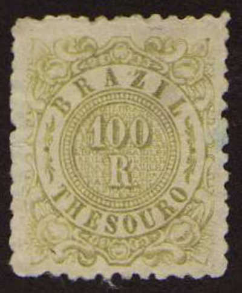
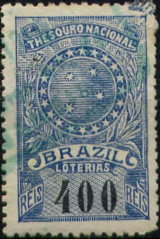
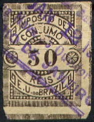
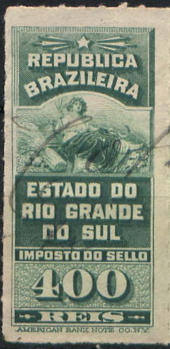
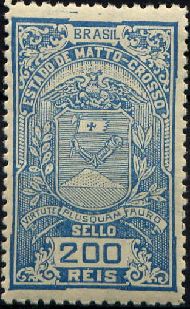
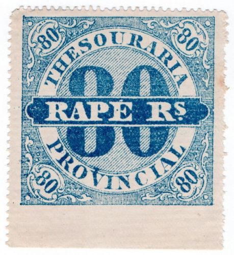

{kind=link}
{kind=link}

(Image obtained thanks to Rainer Schulz)
Return To Catalogue - Brazil fiscal stamps, part 1
Note: on my website many of the
pictures can not be seen! They are of course present in the
catalogue;
contact me if you want to purchase it.
For more fiscal stamps of Brazil, click here.

100 r olive 'THESOURO' fiscal stamp of 1885.

(Image obtained thanks to Rainer Schulz)
In the above design (Southern Cross in a circle) I have seen: 100 r red, 300 r yellow and 400 r blue (value always in black).
(Sorry, no picture available yet)
The values 10 r blue, 20 r green, 50 r red and 100 r lilac exist (both perforated and imperforate). In 1899 the additional values 10 r violet, 25 r lilac, 50 r brown, 60 r green, 100 r blue and 200 r red were issued (mostly perforated, but also imperforate and rouletted).
(Sorry, no picture available yet)
The values 40 r lilac and 200 r brown exist.
(Sorry, no picture available yet)
The values 10 r brown, 20 r red, 50 r green, 100 r orange, 200 r violet, 400 r blue, 500 r olive and 1000 r lilac were issued.
(Sorry, no picture available yet)
In this type the values 200 r brown and 400 r green were issued.
(Image obtained thanks to Rainer Schulz)
The values 5 r blue, 10 r lilac, 20 r green, 50 r
brown, 100 r blue and 200 r red exist (both perforated and
imperforate). Additional values were issued in 1900 in blue (10
r, 20 r, 25 r, 40 r, 60 r, 100 r, 200 r and 800 r) and green (20
r, 40 r, 80 r, 120 r, 200 r, and 2500 r).
Similar stamps with the addition of the word
"ESTRANGERO" added in the design were issued in 1898 in
the values 50 r green, 100 r blue, 250 r brown, 500 r red and
2000 r blue.
(Sorry, no pictures available yet)
The values issued are: 50 r violet, 100 r green, 250 r brown, 500 r red and 2000 r blue.

(Images obtained thanks to Rainer Schulz)
Exists in the values 5 r blue, 10 r violet and 20 r green.
(Sorry, no pictures available yet)
The value 800 r orange was issued.

(Image obtained thanks to Rainer Schulz)
In this design exist: 10 r blue, 20 r blue, 20 r
green, 25 r blue, 25 r green, 40 r blue, 40 r green, 60 r blue,
80 r blue, 80 r green, 100 r blue, 120 r green, 200 r blue, 200 r
green, 800 r blue and 2500 r green. The blue stamps were for
taxes on products from within Brazil, the blue stamps for
products coming from abroad.
Similar fiscal stamps exist without the word "FUMO"
(also issued 1900) in the colours brown and green.

(Image obtained thanks to Rainer Schulz)

(Reduced size)
The values 20 r green, 20 r lilac, 30 r yellow and 30 r red were issued.

(Image obtained thanks to Rainer Schulz)
Two values were issued: 20 r green and 20 r blue. The 20 r blue also exists in a smaller size.
(Sorry, no picture availalbe yet)
A 20 r green was issued in this design (perforated or rouletted).

(Image obtained thanks to Rainer Schulz)
In this design exist: 10 r blue, 20 r green, 30 r brown, 40 r yellow, 50 r green and 50 r grey. In a slightly larger size with red value: 100 r red, 200 r lilac, 300 r violet and 400 r orange. Again in a slightly larger size with red value indication: 1000 r yellow, 2000 r brown and 5000 r green. In the largest size (with red value): 10 $ red, 20 $ grey and 50 $ brown.
(Image obtained thanks to Rainer Schulz)
In this design exist: 10 r, 20 r, 30 r, 40 r, 50 r (all in green), 100 r, 200 r, 300 r, 400 r (all in blue), 2000 r red, 3000 r orange (2 types), 5000 r violet, 1 $, 2 $, 5 $ (all in red), 10 $, 20 $ and 50 $ (all in yellow).
In a flatter design exist 'ESPECIALIDADES PHARMACEUTICAS' (20 r, 40 r, 60 r, 80 r, 100 r, 200 r and 500 r green or blue) and 'PERFUMARIAS' (20 r, 40 r, 60 r, 80 r, 200 r, 500 r and 1000 r, red or green); sorry no pictures available yet.
Many of these stamps were issued in two colours; one for tax on products from Brazil itself and the other for imported goods.


In this design were issued:
A) With small value indication: in the colour brown: 10 r, 20 r,
25 r, 50 r, 100 r, 200 r, 300 r, 400 r, 500 r, 1000 r, 1500 r and
2000 r; in the colour green: 10 r, 20 r, 25 r, 30 r, 50 r, 100 r,
200 r, 300 r, 400 r, 500 r, 1000 r, 1500 r and 2000 r.
B) With large value indication: 10 r, 20 r, 25 r, 50 r and 60 r
(all stamps in both brown or green colour)
(Images obtained thanks to Rainer Schulz)
'CALÇADO' (shoes): 100 r, 200 r, 300 r, 400 r,
700 r and 1000 r (green or brown);
'CARTAS DE JOGAR' (playing cards): 500 r (green or red);
'CONSERVAS' (food cans): 50 r and 100 r (green or yellow);
'TECIDOS' (tissues): 10 r, 20 r, 100 r, 200 r, 300 r (green or
brown; the 10 r brown does not exist);
'VELAS' (candles): 20 r, 50 r and 100 r (green or violet).
(Sorry, no picture available yet)
In this design exist:
In the colour brown: 10 r, 20 r, 25 r, 40 r, 100 r, 120 r and 200
r.
In the colour green: 20 r, 25 r, 40 r, 60 r, 100 r and 200 r.

(Examples, images obtained thanks to Rainer Schulz)
The following values were issued in the colour green: 20 r, 25 r, 40 r, 50 r, 60 r, 80 r, 100 r, 200 r, 300 r, 400 r, 500 r, 1000 r, 1500 r and 2000 r. In the colour red were issued: 20 r, 25 r, 30 r, 40 r, 50 r, 60 r, 80 r, 100 r, 200 r, 300 r, 400 r, 500 r, 1000 r, 1500 r and 2000 r.
(Sorry, no picture available yet)
The following values were issued: 5000 r, 10000 r, 20000 r, 50000 r and 100000 r (in the colours green and brown or red and brown). Normally these stamps were bisected.
(Sorry, no picture available yet)
This stamp was issued in the value 20 r only (colours green and red).
(Images obtained thanks to Rainer Schulz)
The following values exist: 10 r, 25 r, 30 r, 40 r, 50 r, 60 r, 80 r, 100 r, 200 r, 300 r, 400 r, 500 r ,700 r, 1000 r, 1500 r and 2000 r (all in both colours green and red).
I've seen a similar stamp in the value 12.5 r green (other values might exist):

(Image obtained thanks to Rainer Schulz)

('CONSUMO CIGARROS' and 'ISENCAO DO STOCK', images obtained
thanks to Rainer Schulz)
'Districto Federal' is one of the provinces of Brazil.

(Image obtained thanks to Rainer Schulz)
In this design (sitting woman) with inscription 'SELLO MUNICIPAL BRAZIL DISTRICTO FEDERAL' were issued: 200 r blue, 400 r green, 1000 r red and 2000 r orange.
Five different stamps were issued from 1901 to 1905 (with year included in the design).
In 1909 a new design was issued:

(Imposto de Expediente' 1.200 r green, image obtained thanks to
Rainer Schulz)
At least one other value exist: 300 r blue.
Other designs for the 'Districto Federal' exists: 'SELLO MUNICIPAL' (4 values), and 'TAXA JUDICIARIA' (21 values).

(Image obtained thanks to Rainer Schulz)
In this design exist: 100 r red, 200 r blue, 400 r green, 1000 r orange, 2000 r brown and 5000 r brown.

(Image obtained thanks to Rainer Schulz)
In this design exist 20 r yellow, 100 r orange, 500 r green and 2$000 red.
Other fiscal stamps exist for 'Rio Grande Do Sul'.
(Image obtained thanks to Rainer Schulz)
In this design exist: 100 r lilac, 200 r violet, 400 r orange, 500 r green, 800 r olive. In a slightly larger design: 1 $ yellow, 2 $ lilac, 4 $ blue and 5 $ green.

(Image obtained thanks to Rainer Schulz)
I've seen the values: 100 r blue, 200 r green,
300 r red, 300 r orange and 1000 r brown (slightly different
design). The value 1000 r red should also exist.
I have also seen a similar stamp of 5000 r brown with inscription
'EMOLUMENTOS JUDICIAES'. Other values with this inscription
should exist: 100 r blue, 200 r red, 400 r green, 1000 r yellow,
2000 r orange, 10000 r violet and black and 20000 r brown and
blue (in three sizes, the higher values have larger sizes).
If my information is correct a similar series with inscription
'LOTERIAS' should exist.
Other fiscal stamps exist for Rio de Janeiro.

(Images obtained thanks to Rainer Schulz)
In the above design were issued:
With inscription 'CUSTAS JUDICIARES': 50 r brown on blue, 50 r
brown (1900), 100 r brown on green, 100 r blue on green (1900),
200 r brown on blue, 200 r blue (1900), 400 r lilac, 500 r green
on yellow, 500 r blue on lilac (1900), 1000 r brown on yellow,
1000 r blue on yellow (1900), 2000 r brown on green, 2000 r blue
on green (1900), 5000 r brown on yellow, 10000 r brown on orange
and 30000 r brown on lilac.
With inscription 'SECRETARIA DAS FINANCAS' at least the following
values: 100 r red, 100 r violet, 100 r green, 200 r blue, 200 r
brown, 200 r green, 300 r blue, 300 r green, 400 r orange, 400 r
brown, 500 r brown, 500 r blue, 500 r red, 1000 r orange, 1000 r
green, 1000 r lilac, 2000 r red (two shades), 2000 r brown, 2000
r lilac, 5000 r green and yellow, 5000 r blue and 5000 r red. In
a larger design: 10000 r brown and blue and 20000 r blue and red.

(Image obtained thanks to Rainer Schulz)
In this design only the value 300 r blue was issued.
Other fiscal stamps exist for Minas Geraes.

(Images obtained thanks to Rainer Schulz)
In this design exist (with value in red): 100 r lilac, 200 r violet, 400 r orange, 500 r green. In a slightly larger design (with value in red): 1 $ yellow, 2 $ brown, 3 $, 4 $ blue and 5 $ green. Again larger design (value in red): 10 $ red, 15 $ brown, 20 $ violet and 50 $ brown. The 100 r and 200 r exist in two types, differing in the value inscription (fat or normal).

(Image obtained thanks to Rainer Schulz)
In this design exist: 100 r brown, 200 r blue, 500 r red, 1000 r brown, 2000 r green and 4000 r green. In a slightly larger size: 5000 r green and black, 10000 r orange and black, 20000 r brown and black and 50000 r red and black.
Other fiscal stamps exist for Sao Paulo.
Other states and cities have issued fiscal stamps in Brazil. Examples are Alagoas, Amazonas, Bahia, Ceara, Espirito Santo, Goyaz, Maranhao, Matto Grosso, Para, Pernambuco, Piauhy, Rio Grande do Norte, Santa Catharina and Sergipe.
Examples:

Matto-Grosso, image obtained thanks to Rainer Schulz
In the above design of Matto-Grosso I have seen: 100 r red, 200 r blue, 300 r brown and 400 r green (all imperforate or perforated).
(Estado do Para, Municipio de Belem Tarifa de Licencas' 1904)
(Reduced size, inscription 'RECIFE BRINDE PERNAMBUCO')
(Curityba, very long stamp, inscription 'Imposto Municipal Lei de
21 de Janeiro de 1897.')

Bahia fiscal stamps.
Cruz Alta fiscal stamp
{kind=link}
{kind=link}